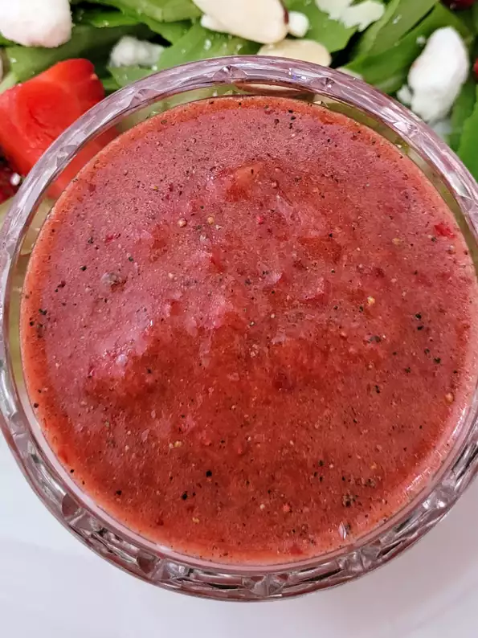

Fresh Strawberry Dressing
Back to Main Directory

Pureed strawberries make a distinctive base for a colorful dressing with a creamy consistency. It is also a nice way to dress a salad of arugula, goat cheese and toasted pecans.
_____
Ingredients
- 1 cup strawberries, rinsed, hulled and sliced
- 1 tablespoon balsamic vinegar
- ¾ teaspoon freshly ground pepper
- ½ teaspoon sugar
- ¼ teaspoon salt
- 2 tablespoons almond oil or canola oil
Steps
- Place strawberries, vinegar, pepper, sugar and salt in a blender or food processor.
- Process until pureed, stopping once or twice to scrape down the sides.
- Add oil and process until smooth.
Back to Main Directory